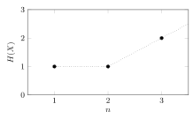

Tema 5. Límits fonamentals en compressió de font pdf
Introducció
Fins ara, hem vist que els codis Huffman són els codis òptims per a qualsevol font discreta i que la longitud mitjana $L_{\rm av}$ d'aquest codi és “a prop” de l'entropia de la font. En altres paraules, el codi òptim per a una font $U$ que pren valors a $\{1,\ldots, r\}$ amb distribució de probabilitat $\{p_1,\ldots,p_r\}$ satisfà $$ H(U) \leq L_{\rm av} < H(U) + 1, \tag{5.1}$$ on $L_{\rm av}=\smash{\sum_{j=1}^r \ell_j p_j}$ és la longitud mitjana del codi i $H(U)=\smash{-\sum_{j=1}^r p_j \log_2 p_j}$ és l'entropia de la font. Al tema anterior, vam trobar que el rendiment del codi òptim augmentava comprimint diversos símbols alhora. És a dir, podem dissenyar el nostre codi Huffman per a blocs de $n$ símbols $X=(U_1,\ldots,U_n)$ i obtenir un codi la longitud mitjana del qual satisfaci $$ H(X) \leq L_{\rm av} < H(X) + 1. \tag{5.2} $$ Calcular l'entropia $H(X)$ pot ser complicat, ja que la cardinalitat de l'alfabet de $X$ creix exponencialment amb $n$. És a dir, el nombre de possibles seqüències font de longitud $n$, donat per $n$ vegades el producte cartesià de l'alfabet, és $r^n$. Tanmateix, si la font no té memòria, el càlcul de $H(X)$ es simplifica bastant.
Entropia d'una font discreta sense memòria
Considerem una font descrita per la seqüència de variables aleatòries $X=(U_1,\ldots,U_n)$ prenent valors en $$ {\cal X} = {\cal U}^n = \underbrace{{\cal U}\times \cdots \times {\cal U}}_{n\text{ vegades}} \tag{5.3}$$ amb distribució conjunta $P_X(x)=P_{U_1\cdots U_n}(u_1,\ldots,u_n)$. L'entropia de $X$ ve donada pel valor esperat del logaritme negatiu de la distribució conjunta, és a dir $$\begin{align} H(X) = \mathbb{E}\left[ \log_2 \frac{1}{P_X(X)} \right] = -\sum_{x\in {\cal X}} P_X(x) \log_2 P_X(x). \tag{5.4} \end{align}$$ Com que la font no té memòria, $X=(U_1,\ldots,U_n)$ és una seqüència de variables independents i, per tant, la distribució de $X$ acompleix $$ P_X(x) = \prod_{i=1}^n P_{U_i}(u_i). \tag{5.5} $$ Utilitzant $(5.5)$ a $(5.4)$ obtenim que $$ H(X) = -\mathbb{E}\left[ \log_2 \prod_{i=1}^n P_{U_i}(U_i) \right] = -\mathbb{E}\left[ \sum_{i=1}^n \log_2 P_{U_i}(U_i) \right] = \sum_{i=1}^n \mathbb{E}\left[ \log_2 \frac{1}{P_{U_i}(U_i)} \right] = \sum_{i=1}^n H(U_i); \tag{5.6} $$ l'entropia d'una seqüència de variables aleatòries independents esdevé la suma de cada entropia individual. Finalment, com que en una font discreta sense memòria els símbols estan distribuïts de manera idèntica, totes les entropies són iguals i $$ H(X) = n H(U); \tag{5.7} $$ l'entropia d'una seqüència de variables i.i.d. aleatòries és $n$ vegades l'entropia d'un sol símbol!
Problema 5.1. Una font discreta $X=(U_1,\ldots,U_n)$ produeix símbols independents $U_i$, tots prenent valors sobre l'alfabet $\{0,1\}$. L'entropia de $X$ ve donada per la següent gràfica en funció de $n$.

Quina de les afirmacions següents és certa?
- (a) La font no té memòria ($U_i$ són independents i es distribueixen de manera idèntica per a $i=1,\ldots,n$)
- (b) $U_1$ i $U_3$ tenen símbols equiprobables
- (c) $H(U_2)=1$
- (d) La longitud mitjana de qualsevol codi binari sense prefix per a $X$ amb $n=3$ compleix $L_{\rm av}\geq 3$
Mostra la solució
Utilitzant $(5.6)$ i a partir de la gràfica, inferim que $H(U_1)=1$, $H(U_1)+H(U_2)=1$ i $H(U_1)+H(U_2)+H(U_3)=2$, implicant $H(U_2)=0$ i $H(U_3)=1$. Com que $H(U_2)=0$, la font no pot tenir memòria (en realitat només si $H(U_1)=H(U_2)=H(U_3)$) invalidant (a) i (c). L'entropia de $X$ per a $n=3$ és $H(X)=2$, per tant, la longitud mitjana de qualsevol codi binari sense prefix per a aquesta font està limitada per $2$, no per $3$. Finalment, (b) és certa perquè tant $U_1$ com $U_3$ prenen valors a $\{0,1\}$ i, per a bits equiprobables, $H(U_1)$ i $H(U_3)$ són efectivament iguals a $1$.
Comprimint una font d'informació
Ara estem equipats per demostrar el rendiment assimptòtic de comprimir una font d'informació $X$ amb codis binari sense prefixos òptims (Huffman) quan la longitud dels blocs font codificats $n$ tendeix a l'infinit. Per fer-ho, definim la longitud mitjana per símbol com a $$ L_n = \frac{L_{\rm av}}{n}, \tag{5.8} $$ on $L_{\rm av}$ és la longitud mitjana del codi òptim (Huffman) per a una font discreta sense memòria $X=(U_1,\ldots,U_n)$. De la mateixa manera, definim l'eficiència d'un codi utilitzat per representar una font $X$ de longitud $n$ com $$ e_n = \frac{H(X)}{L_{\rm av}}. \tag{5.9}$$ Si la font no té memòria, llavors $H(X)=nH(U)$ i l'eficiència es poden escriure utilitzant la longitud mitjana per símbol $L_n$ a $(5.8)$ com $$ e_n = \frac{nH(U)}{L_{\rm av}} = \frac{n H(U)}{n L_n} = \frac{H(U)}{L_n}. \tag{5.10} $$
Exemple 5.2. Considerem la font discreta sense memòria $X=(U_1,\ldots,U_n)$ on cada $U_i$ pren valors $\{a,b\}$ amb probabilitat $\bigl\{\frac 23,\frac 13\bigr\}$. Per a $n=1$, tenim $H(X)=H(U)=\log_2(3)-\frac 23$ bits, mentre que el codi òptim sense prefix té una distribució de longitud $\{1,1\}$ que condueix a $L_{\rm av}=1$ bit. Utilitzant les equacions $(5.8)$ i $(5.10)$ obtenim $L_1=1$ i una eficiència de $$ e_1 = \frac{H(X)}{L_{\rm av}} = \frac{H(U)}{L_1} = H(U) = \log_2(3)-\frac 23 \approx 0.918296. \tag{5.11} $$ Per a $n=2$, tenim que $X$ pren valors a $\{aa,ab,ba,bb\}$ amb probabilitat $\bigl\{ \frac 49, \frac 29, \frac 29, \frac 19 \bigr\}$, per tant una entropia de $H(X)=2H(U)=2\log_2(3) - \frac 43$. El codi òptim sense prefix per a $X$ és, per exemple, el codi Huffman $\{0,10,110,111\}$ de la distribució de longitud $\{1,2,3,3\}$, donant una longitud mitjana de $L_{\rm av} = \frac{17}{9}$. Com que estem codificant blocs de $n=2$ símbols, la longitud mitjana per símbol en aquest cas és de $L_2=\frac{L_{\rm av}}{2} = \frac{17}{18}$ bits per símbol. Amb aquests números, obtenim una eficiència de $$ e_2 = \frac{H(X)}{L_{\rm av}} = \frac{2\log_2(3)-\frac 43}{17/9} \approx 0.972313, \tag{5.12} $$ lleugerament superior a la de $(5.11)$.
Problema 5.3. Calculeu l'eficiència del codi òptim sense prefix per a $X$ a l'exemple 5.2 per a $n=3$.
Mostra la solució
Per determinar l'eficiència $e_3$ necessitem l'entropia de $X$ d'una banda, i la longitud mitjana del codi de Huffman per a $X$ de l'altra. Com que la font no té memòria, no necessitem calcular tot l'alfabet i la distribució de $X$ per calcular l'entropia i simplement utilitzar-la $H(X)=3H(U)= 3\log_2(3)-2$. Per contractar el codi Huffman, hem de determinar l'alfabet i la distribució de $X$. Després de fer-ho, construir l'arbre de Huffman i trobar la distribució de longitud (queda com a exercici!), obtenim una longitud mitjana de $L_{\rm av}=\frac{76}{27}$. Per tant, $$ e_3 = \frac{H(X)}{L_{\rm av}} \approx 0.97871, \tag{5.13} $$ un altre augment de l'eficiència respecte a $(5.12)$.
Problema 5.4. Dissenyem un codi sense prefixos subòptim per a la font discreta sense memòria $X$ a l'exemple 5.2. Per a qualsevol $n$, les longituds d'aquest codi compleixen $\ell(x)=\lceil - \log_2 P_X(x) \rceil $. Calculeu l'eficiència d'aquest codi per a $n=3$ i compareu-la amb la del codi òptim.
Mostra la solució
Per a $n=3$, $X$ pren valors a $\{aaa,aab,aba,abb,baa,bab,bba,bbb\}$ amb distribució de probabilitat $\bigl\{ \frac{8}{27} , \frac{4}{27},\frac{4}{27},\frac{2}{27},\frac{4}{27},\frac{2}{27},\frac{2}{27},\frac{1}{27} \bigr\}$. L'eficiència del codi òptim ja es va calcular a $(5.13)$. El codi subòptim codificarà $x=aaa$ amb $\ell(x)=\ell(aaa)=\lceil - \log_2 P_X(aaa) \rceil = \lceil - \log_2 \frac{8}{27} \rceil \approx \lceil 1.75489 \rceil = 2$ bits. Amb el mateix procediment obtenim una distribució de longituds $\{2,3,3,4,3,4,4,5\}$, donant una longitud mitjana de $L_{\rm av} = 3$ i una eficiència de $e_3 \approx 0.918296$, menor que l'òptima.
Hem vist dels exercicis anteriors que augmentar $n$ pot augmentar l'eficiència, és a dir, que $L_{\rm av}$ s'acosta a $H(X)$ o que $L_n$ s'acosta a $H(U)$. Per veure-ho, combinem els resultats obtinguts en aquest apartat amb els de la introducció. Utilitzant $(5.8)$ i $(5.7)$ a $(5.2)$, tenim que la longitud mitjana per símbol del codi òptim sense prefix per a una font discreta sense memòria $X$ satisfà (després de dividir per $n$ tots els termes): $$ H(U) \leq L_n < H(U) + \frac 1n. \tag{5.14} $$ Com que $L_n$ és límit inferior i superior com a $(5.14)$, concloem que $$ \lim_{n\to\infty} L_n = H(U); \tag{5.15}$$ la compressió de blocs és molt eficient ja que la longitud mitjana corresponent per símbol $L_n$ convergeix a l'entropia de la font. El mateix resultat es pot expressar en termes d'eficiència. Atès que la longitud mitjana de qualsevol codi lliure de prefix per a $X$ té un límit inferior com a $L_{\rm av} \geq H(X)$, a partir de la definició de l'eficiència a $(5.10)$ trobem que l'eficiència té un límit superior com $e_n \leq \frac{H(X)}{H(X)}=1$. De la mateixa manera, utilitzant que la longitud mitjana del codi òptim satisfà $L_{\rm av}<H(X)+1$, tenim que $e_n>\smash{\frac{H(X)}{H(X)+1}}$. Combinant-ho tot, ho tenim $$ \frac{H(X)}{H(X)+1} < e_n \leq 1. \tag{5.16} $$ Si la font no té memòria, llavors $(5.16)$ es pot escriure com $$ \frac{H(U)}{H(U)+\frac 1n} < e_n \leq 1, \tag{5.17}$$ implicant el resultat següent: $$ \lim_{n\to\infty} e_n = 1. \tag{5.18}$$
Exemple 5.5. Considereu una font discreta sense memòria $X=\{U_1,\cdots,U_n\}$ on cada $U_i$ pren valors a $\{a,b,c\}$ amb probabilitat $\bigl\{\frac 12, \frac 14, \frac 14\bigr\}$. L'entropia de $U$ és $H(U) = \frac 32$. Per exemple, per a $n=10$, això implica que la longitud mitjana del codi òptim per a $X$ satisfà $15 \leq L_{\rm av} < 16$, o que la longitud mitjana per símbol satisfà $ \frac 32 \leq L_{10} < \frac 85$, o que l'eficiència satisfà $\frac{15}{16} < e_{10} \leq 1$.
Finalitzem l'últim tema sobre la codificació de font amb un problema relacionat amb la probabilitat i el rendiment assimptòtic de comprimir una font d'informació.
Problema 5.6. Una font discreta sense memòria $X=(U_1,\ldots,U_n)$ té una distribució de probabilitat $P_X(x)$. Definim la variable aleatòria $Y=f(X)$, on $f(x)=-\log_2 P_X(x)$. Calcula $ \lim_{n\to\infty} \mathbb{P}[Y < n^2 H(U)]$.
Mostra la solució
Utilitzant la desigualtat de Markov, ja que $Y$ és una variable aleatòria no negativa, tenim que $$ \mathbb{P}[Y < n^2 H(U)] = 1 - \mathbb{P}[Y \geq n^2 H(U)] \geq 1 - \frac{\mathbb{E}[Y]}{n^2 H(U)}. \tag{5.19}$$ El valor esperat de $Y$ es pot calcular en termes de $X$, donat que $\mathbb{E}[Y]=\mathbb{E}[f(X)]=\mathbb{E}[-\log_2 P_X(X)]$, que resulta ser la definició de l'entropia de $X$ segons $(5.4)$. Per tant, $\mathbb{E}[Y]=H(X)$. Com que la font no té memòria, a partir de $(5.7)$, també tenim que $H(X)=nH(U)$. Combinant tots els resultats, obtenim $$ 1 \geq \mathbb{P}[Y < n^2 H(U)] \geq 1 - \frac{1}{n}, \tag{5.20}$$ on la primera cota és una cota trivial. Prenent el límit com $n\to\infty$ a tots els termes anteriors, concloem que $\lim_{n\to\infty} \mathbb{P}[Y < n^2 H(U)] = 1$.